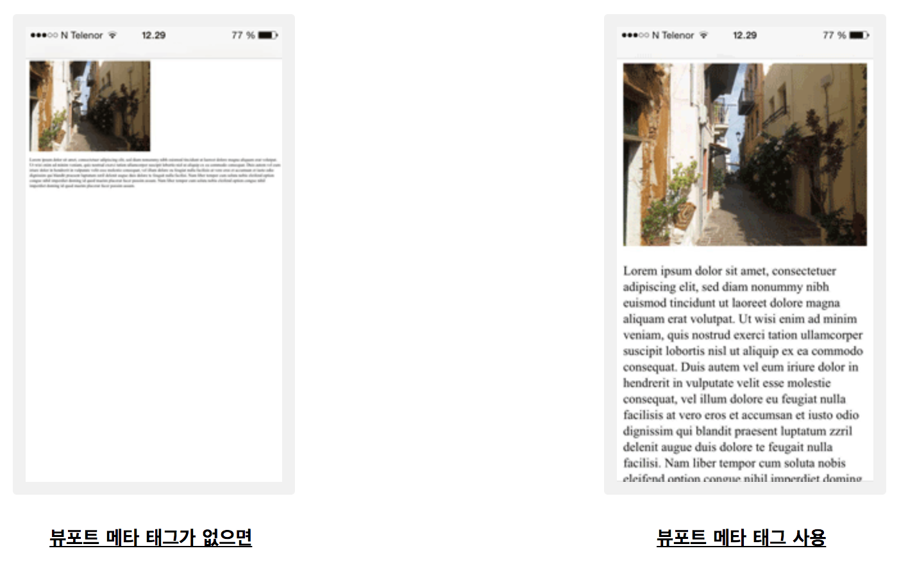

메타태그 정리 / SEO 검색엔진최적화 / meta tag
SEO 검색엔진최적화 메타태그 정리!! meta tag
메타태그는 HTML 문서의 <head>태그 안에 들어간다. 직접적으로 브라우저에 노출되지 않지만 포털사이트 검색엔진 노출에 관련한 정보를 등록할 수 있도록 도와주는 아주아주 중헌 태그다. SEO 검색엔진최적화에 필요한 메타태그 정리를 해보려고한다. meta tag 모음.
<head></head>사이에<meta>태그가 위치하며 항상 이름, 값 쌍으로 기재된다.- HTML5에 들어서 메타태그를 통해 뷰포트(viewport)를 제어 할 수 있게하는 메소드를 도입했다. 뷰포트는 웹 페이지의 사용자가 볼 수 있는 영역이고, 이것은 장치에 따라 다르며 휴대 전화에서는 컴퓨터 화면보다 작다.
- 모든 웹 페이지에 다음과 같은
<meta>뷰포트 요소를 포함해야 한다.
<meta name="viewport" content="width=device-width, initial-scale=1.0">-
viewport 요소는 페이지의 크기와 배율을 제어하는 방법에 대한 브라우저 지침을 제공한다.
- ‘width = device-width’ 부분은 페이지의 너비를 장치의 화면 너비에 따라 설정한다. (장치에따라 다름)
- ‘initial-scale = 1.0’ 부분은 브라우저가 페이지를 처음 로드 할 때 초기 줌 레벨을 설정한다.

메타태그 여러가지 속성
* 키워드(keywords)
검색 엔진에 대한 키워드를 정의 한다.
<meta name="keywords" content="Fillibee blog, meta tag, HTML">* 게시글 설명(description)
웹 페이지에 대한 설명을 정의한다.
<meta name="description" content="메타태그를 설명한 웹페이지 입니다.">* 작성자(author)
페이지 작성자를 정의한다.
<meta name="author" content="필리비">* ~초마다 웹페이지를 새로고침(refresh)
현재 보이는 웹페이지를 설정한 시간마다 새로고침 함. (예제: 20초)
<meta http-equiv="refresh" content="20">* 뷰포트설정(vewport)
모든 기기(장치)에서 웹 사이트가 최적화로 잘 보이도록 뷰포트를 설정한다.
모바일최적화에는 HTML문서의 <head>태그 안에 들어가는 <meta> viewport와 CSS의 media query가 있다.
<meta name="viewport" content="width=device-width, initial-scale=1.0">
* 한국에서 사용되는 인코딩 방식(charset=”utf-8”)
현재 한국 웹페이지표준에 맞춰 utf-8로 대동단결. html 파일의 인코딩을 알려주는 태그. 다양한 경우에 한글이 꺠지지 않고 잘 보이기를 기대한다면 utf-8을 꼭 적어주는 것이 좋다.
<meta charset="utf-8">* 웹페이지 생성에 사용된 제작도구
웹페이지 생성(제작)에 사용된 제작도구를 기재한다.
<meta name="generatorr" content="jekyll v3.8.5">* 오픈 그래프(Open Graph) 태그
다른 웹페이지나 SNS에 공유할때 표기되는 속성들
<meta property="og:type" content="article">
<meta property="og:title" content="메타태그 오픈그래프 설명 예제 타이틀">
<meta property="og:url" content="https://fillip89.github.io/post_url">
<meta property="og:site_name" content="Fillibee blog">
<meta property="og:description" content="필리비블로그 오픈그래프 본문내용 예제">아무리 질 좋은 내용의 웹페이지더라도 SEO 검색엔진최적화를 제대로 설정해놓지 않는다면 무용지물. 적절한 키워드와 타이틀과 본문내용 등 메타태그 삽입으로 검색결과에 잘 노출되게 해보자.
같은 카테고리의 다른 글
Home| Databass / MySQL 설치법(MAC 환경) 무료 데이터베이스 | 2019. 03. 11 |
|---|---|
| CSS 간단한 이해와 여러가지 속성 | 2019. 02. 26 |
| jekyll을 github 저장소에 동기화 시키기. git init, add, commit, push | 2019. 02. 23 |
| 납치태그 meta refresh 리디렉션 소스코드 | 2019. 02. 21 |
| 메타태그 정리 / SEO 검색엔진최적화 / meta tag | 2019. 02. 20 |
| Jekyll Install Mac OS X / 지킬 설치하는 법 for 맥 | 2019. 02. 18 |
| Github에 Jekyll로 RSS feed, sitemap, robots 생성하기 | 2019. 02. 17 |
| 튜너없이 기타 튜닝하는 법 / How to Guitar Tuning / (Sound Track 제공) | 2019. 02. 16 |
| 마크다운 기본 구문 / Markdown Basic Syntax | 2019. 02. 15 |
| 알고있으면 유용하고 간단한 Mac OS Terminal / 터미널 명령어 | 2019. 02. 15 |